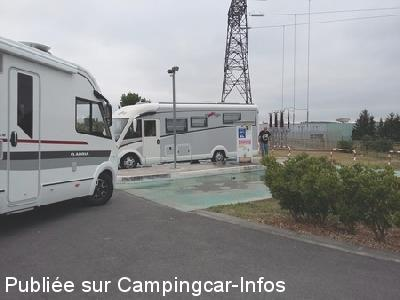
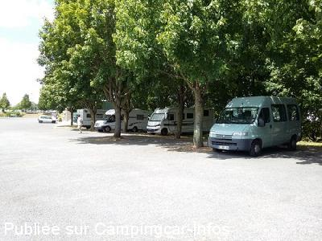
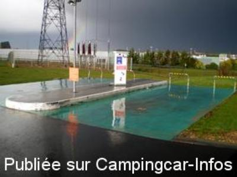
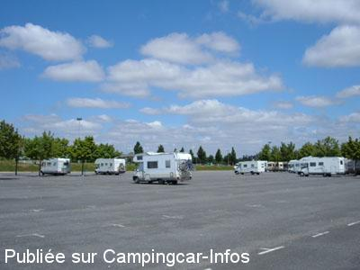

ASN = Aire de services avec stationnement nuit possible de :
CHASSENEUIL DU POITOU Futuroscope
(N° 295)
Accès/adresse :
Parking du Futuroscope
86360 CHASSENEUIL DU POITOU
86360 CHASSENEUIL DU POITOU
Latitude : (Nord) 46.66372° Décimaux ou 46° 39′ 49′′
Longitude : (Est) 0.36758° Décimaux ou 0° 22′ 3′′
Tarif : 2015
Journée 8 h 30 à 8 h 30 : 7 €
ou soirée 17 h à 8 h 30 : 3 €
Eau : 2 € /100 L
Électricité 1 H : 2 €
Chenil : 5 €
Wifi gratuit sur le parking
Sorties après 8 h 30, supplément : 7 €
Type de borne : EURO-RELAIS
Services :


Dépôt de pain et viennoiseries le matin
à partir de 7 h 30
Autres informations :
Tél : +33(0)549 491 112
Pas d'accès au parking pendant la fermeture du Futuroscope

Le 29/07/2015 par coralys

Le 29/07/2015 par coralys

Le 10/04/2010 par nadalet

Le 27/07/2005 par bdc69
de
rjgca
le 26/08/2015 :
Nous y étions début août
Il y a toujours de la place
Pas de charme mais super pratique pour aller au parc
Auchan à côté du parking
Dommage qu'il faille sortir avant 8h30
Petite astuce télécharger l'application du futuroscope pour avoir en direct le temps d'attente et les horaires des spectacles
Nous y étions début août
Il y a toujours de la place
Pas de charme mais super pratique pour aller au parc
Auchan à côté du parking
Dommage qu'il faille sortir avant 8h30
Petite astuce télécharger l'application du futuroscope pour avoir en direct le temps d'attente et les horaires des spectacles
de
Olivier
le 12/08/2015 :
Il s'agit de d'un immense parking à quelques minutes à pied de l'entrée du Futuroscope.
L'aire possède un petit local à l'entrée où une équipe souriante vous accueille. Du pain est disponible le matin à 8h.
Pratique pour accéder au parc et dans la journée pour faire une pause par exemple.
Il s'agit de d'un immense parking à quelques minutes à pied de l'entrée du Futuroscope.
L'aire possède un petit local à l'entrée où une équipe souriante vous accueille. Du pain est disponible le matin à 8h.
Pratique pour accéder au parc et dans la journée pour faire une pause par exemple.
de
coralys
le 29/07/2015 :
Avec beaucoup de chance, il est possible de trouver une place à l'ombre si, pour des raisons personnelles, un animal reste à bord. A noter : une hôtesse d'accueil vous applique un tampon sur la main pour entrer et sortir à volonté du parc, et regagner le camping-car.
Le ticket est effectivement valable jusque 8h30 le lendemain matin. Il est évident qu'il faut anticiper pour les vidanges avant de partir afin d'éviter le constat qu'on a fait de visu : certains indélicats ouvrent sans état d'âme leur vanne afin de vidanger sur leur emplacement et partir avant expiration du ticket ! sans commentaire ....
Avec beaucoup de chance, il est possible de trouver une place à l'ombre si, pour des raisons personnelles, un animal reste à bord. A noter : une hôtesse d'accueil vous applique un tampon sur la main pour entrer et sortir à volonté du parc, et regagner le camping-car.
Le ticket est effectivement valable jusque 8h30 le lendemain matin. Il est évident qu'il faut anticiper pour les vidanges avant de partir afin d'éviter le constat qu'on a fait de visu : certains indélicats ouvrent sans état d'âme leur vanne afin de vidanger sur leur emplacement et partir avant expiration du ticket ! sans commentaire ....
de
Ocral J
le 29/07/2015 :
Il y a un chenil afin de pouvoir mettre les animaux à l'abri du chaud ou froid. Ils ont des cages individuelles.
Il en coute 5 € jour
Le chenil est ouvert 30 mm avant le parc et est fermé 30 mm après la fin du spectacle.
Jack
Il y a un chenil afin de pouvoir mettre les animaux à l'abri du chaud ou froid. Ils ont des cages individuelles.
Il en coute 5 € jour
Le chenil est ouvert 30 mm avant le parc et est fermé 30 mm après la fin du spectacle.
Jack
de
Famille coco
le 27/04/2015 :
Utilise le 14 avril
Aire parfaite pour aller au futuroscope. Propose meme du pain et viennoiseries
Utilise le 14 avril
Aire parfaite pour aller au futuroscope. Propose meme du pain et viennoiseries
de
marc
le 10/08/2014 :
aire très grande située juste a l'entrée du Futuroscope.
nous y somme arrivés le 24 juillet pour une visite du parc le lendemain . attention a ne passer la barrière qu' après 17h00 sinon vous payer la journée.nous avons fait valider le ticket le jour de notre visite après 8h30 ,et sommes partis le lendemain avant 8h30. Pour ne pas payer une journée supplémentaire
aire très grande située juste a l'entrée du Futuroscope.
nous y somme arrivés le 24 juillet pour une visite du parc le lendemain . attention a ne passer la barrière qu' après 17h00 sinon vous payer la journée.nous avons fait valider le ticket le jour de notre visite après 8h30 ,et sommes partis le lendemain avant 8h30. Pour ne pas payer une journée supplémentaire
de
Alain
le 04/07/2014 :
Bonjour,
un complément d'info :
attention, l'accès est contrôlé par une barrière et une borne de type péage d'autoroute, avec délivrance d'un ticket ; celui-ci sera validé après péage et déclenchera l'ouverture de la barrière. Mais si la sortie s'effectue le matin après 8 h 30, la barrière ne s'ouvrira pas car le tarif journée sera enclenché : il faudra payer 7 euros de plus, même pour sortir à 8 h 35 !
Bonjour,
un complément d'info :
attention, l'accès est contrôlé par une barrière et une borne de type péage d'autoroute, avec délivrance d'un ticket ; celui-ci sera validé après péage et déclenchera l'ouverture de la barrière. Mais si la sortie s'effectue le matin après 8 h 30, la barrière ne s'ouvrira pas car le tarif journée sera enclenché : il faudra payer 7 euros de plus, même pour sortir à 8 h 35 !
de
julie
le 05/05/2014 :
Nous y avons passé deux nuits : arrivée 18h00, visite du parc le lendemain, puis deuxième nuit, départ avant 8h30 le lendemain, le tout pour 10 €. Prix tout a fait correct. L'aire est agréable, le service pratique bien que payant.
Dépôt de pain et viennoiseries le matin à partir de 7h30, bien pratique pour être au parc dès son ouverture.
Nous y avons passé deux nuits : arrivée 18h00, visite du parc le lendemain, puis deuxième nuit, départ avant 8h30 le lendemain, le tout pour 10 €. Prix tout a fait correct. L'aire est agréable, le service pratique bien que payant.
Dépôt de pain et viennoiseries le matin à partir de 7h30, bien pratique pour être au parc dès son ouverture.
de
claude92
le 01/03/2014 :
Bonjour,
Je mets une photo des cages du chenil (5€ jours)
Sur place il y avait des chats, des chiens et un lapin. Ma chienne 20kg a eu une cage double ça c'est très bien passé.
Pour le reste, chenil et aire personnel très sympa.
Bonjour,
Je mets une photo des cages du chenil (5€ jours)
Sur place il y avait des chats, des chiens et un lapin. Ma chienne 20kg a eu une cage double ça c'est très bien passé.
Pour le reste, chenil et aire personnel très sympa.
de
Amélie B.
le 04/01/2014 :
§ 2 nuits du 31 décembre 2013 au 2 janvier 2014, arrivés après 17h00 le 31, repartis avant 8h30(plus 8h00) le 2 soit 10 €.
Aire calme et vraiment idéale pour aller visiter le Futuroscope.
Accueil pour les camping-caristes avec grande amplitude horaire, très sympathiques, possibilité de payer le parking là.
Pour les chiens : Chenil ouvert 30 min avant ouverture du parc et fermé 30 min après la fin du spectacle nocturne. Cages propres. Idéal pour visiter sans s'inquiéter pour son chien.
§ 2 nuits du 31 décembre 2013 au 2 janvier 2014, arrivés après 17h00 le 31, repartis avant 8h30(plus 8h00) le 2 soit 10 €.
Aire calme et vraiment idéale pour aller visiter le Futuroscope.
Accueil pour les camping-caristes avec grande amplitude horaire, très sympathiques, possibilité de payer le parking là.
Pour les chiens : Chenil ouvert 30 min avant ouverture du parc et fermé 30 min après la fin du spectacle nocturne. Cages propres. Idéal pour visiter sans s'inquiéter pour son chien.
de
nelly
le 23/07/2013 :
§
Avons passé 2 nuits et une journée sur cette aire (en juillet 2013).
Arrivé le mercredi soir à 17h et repartit le vendredi à 7h30. Celà nous a couté 10 € sans electricité.
Aire calme, si ce n'est qu'elle est proche de la nationale, on entend bien les voitures circulées.
Dépot de pain et de viennoiserie le matin, bien pratique.
Idéale quand on veux visiter le futuroscope, on est à 2 min à pied.
§
Avons passé 2 nuits et une journée sur cette aire (en juillet 2013).
Arrivé le mercredi soir à 17h et repartit le vendredi à 7h30. Celà nous a couté 10 € sans electricité.
Aire calme, si ce n'est qu'elle est proche de la nationale, on entend bien les voitures circulées.
Dépot de pain et de viennoiserie le matin, bien pratique.
Idéale quand on veux visiter le futuroscope, on est à 2 min à pied.
de
willythep
le 15/08/2012 :
Avons suivi les (bons!) conseils ci-dessous et cela fonctionne.
De plus pour les 25 ans du site, le pass est valable 2 ans !
Attention quand même car si vous restez plus d'une nuit, le ticket n'est plus valable !
Vérifiez à l'espace Club.
Personnellement, j'ai insisté à l'interphone du péage et le personnel a ouvert la barrière.
Centre commercial accessible à pied.
Avons suivi les (bons!) conseils ci-dessous et cela fonctionne.
De plus pour les 25 ans du site, le pass est valable 2 ans !
Attention quand même car si vous restez plus d'une nuit, le ticket n'est plus valable !
Vérifiez à l'espace Club.
Personnellement, j'ai insisté à l'interphone du péage et le personnel a ouvert la barrière.
Centre commercial accessible à pied.
de
chti'gus
le 25/06/2012 :
Suivant les conseils de Nicolas du 21/11/2009, nous avons demandé à l'accueil la carte club senior.
Elle coûte 75€ pour la première personne, puis une réduction de 10% pour la 2ème personne. Cette carte nous ouvre les portes du futuroscope gratuitement pendant 2 ans y compris le parking. Il suffit de montrer la carte club pour obtenir la gratuité du parking. Plus besoin d'arriver après 17h et quitter avant 8h pour bénéficier de la réduction parking (2€ au lieu de 6). Seul petit bémol, les 100 litres d'eau coûtent cher (4€). D'autre part la visite du futuroscope est beaucoup plus calme en pleine semaine. Les wwek end sont surchargés donc si vous le pouvez allez y en semaine. Bonne visite et bonne route
Suivant les conseils de Nicolas du 21/11/2009, nous avons demandé à l'accueil la carte club senior.
Elle coûte 75€ pour la première personne, puis une réduction de 10% pour la 2ème personne. Cette carte nous ouvre les portes du futuroscope gratuitement pendant 2 ans y compris le parking. Il suffit de montrer la carte club pour obtenir la gratuité du parking. Plus besoin d'arriver après 17h et quitter avant 8h pour bénéficier de la réduction parking (2€ au lieu de 6). Seul petit bémol, les 100 litres d'eau coûtent cher (4€). D'autre part la visite du futuroscope est beaucoup plus calme en pleine semaine. Les wwek end sont surchargés donc si vous le pouvez allez y en semaine. Bonne visite et bonne route
de
pat24
le 17/08/2009 :
Parking très bien (beaucoup de places et assez bien arboré), nous avons passé deux jours et comme beaucoup de CC on est parti à 7h30 (vu le tarif) 14€ (8h à 8h = 6€) x2 =12€ mais vu qu'on est arrivé à 23h (17h à 8h = 2€). Sinon, très bien situé et pour le bruit, vue la saison, c'était calme même la nuit (avec les lanterneaux ouverts car chaleur étouffante). A part ça, nous avons passé un très bon et beau week-end.
Parking très bien (beaucoup de places et assez bien arboré), nous avons passé deux jours et comme beaucoup de CC on est parti à 7h30 (vu le tarif) 14€ (8h à 8h = 6€) x2 =12€ mais vu qu'on est arrivé à 23h (17h à 8h = 2€). Sinon, très bien situé et pour le bruit, vue la saison, c'était calme même la nuit (avec les lanterneaux ouverts car chaleur étouffante). A part ça, nous avons passé un très bon et beau week-end.